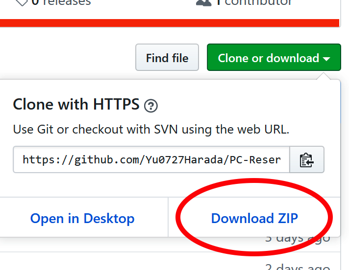
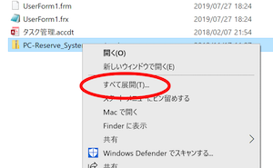
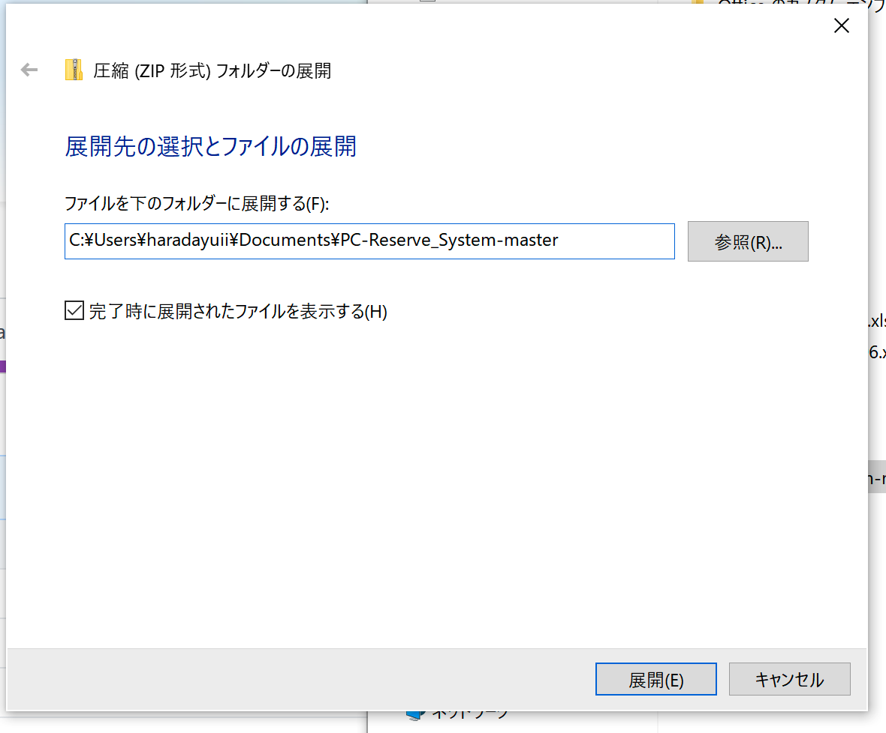

開発
-
VBEを開く
マクロの編集を直接できるVisualBasicEditorを開くことができます。システムのカスタマイズでパスコードを設定したり、プロフィールのデザインを設定したりできます。
-
パスコードの追加/削除
現在PC予約表でパスコードには2種類あります。１つ目はVBE上の標準モジュールにて"passcord"という定数として設定されているもの。便宜上、これを定数パスコードと名付けます。２つ目は登録した人の学籍番号、あるいは学生証に表記されている台帳番号をパスコードとして利用できます。このボタンからその登録を行うことができます。学籍番号と台帳番号は共通の独自の番号に変換されるので、どちらかを登録すると入力画面では両方の入力に対応します。
- ボタンを押すとパスコードを要求されます。これは第三者から自由にパスコードを追加されたりしないようにするためです。定数パスコードかすでに登録した人の学籍番号などを入力してください。
-
登録する人の学籍番号か台帳番号を入力し、OKボタンを押すと、新規のパスコードを登録することができます。
すでに登録した人の学籍番号か台帳番号を入力すると、その番号を削除することができます。
-
エクセルファイルのアップデート
PC予約表のマクロはオンラインストレージであるgithub上で更新されています。githubでの操作を含めてアップデートの仕方を説明します。-
githubURLhttps://github.com/Yu0727Harada/xlAresにアクセスします。
赤丸で記した緑色のclone or downloadを押します。

-
downloadするためのボタンが出てくるのでdownload Zipをクリックします。

ダウンロードが始めるので好きな所に保存します。 -
保存した所に移動してダウンロードしたファイルを選択し、右クリックから全てを展開を選択します。

好きな所に展開をします

展開したフォルダの中にbinという名前のフォルダがあります。色々ファイルが入っていますが、大事なのはこの中に入っているPC席予約表のエクセルファイルとせいぜいnoimage.pngファイルです。noimage.pngファイルについてはLAのプロフィールを設定するを参照してください。
PC席予約表のエクセルファイルを好きな場所に移動します。 -
移行元の予約表エクセルファイルを用意します。この時、移行元と移行先のエクセルファイルの名前は異なるものにしてください。以降元のエクセルファイルを開きます。
LAコントロールパネルを表示し、エクセルファイルのアップデートボタンを押します。ファイルダイアログが出るので先ほどダウンロードしたエクセルファイルを選びます。
選ぶと画面がカチカチしたりしますが、この間にデータの移行を行なっています。データの移行が終わるとダイアログが出ます。

これでデータの移行は完了です。
このパスコードには定数パスコードは含まれません。定数パスコートを引き継ぐにはVBEエディターから定数パスコードを設定し、github上のデータをアップデートする必要があります。 -
githubURLhttps://github.com/Yu0727Harada/xlAresにアクセスします。
-
定期保存のON/OFF
エクセルのファイルは1分ごとに保存されています。しかし、編集を行なっている時などは保存が入ると重くなってしまいます。そのため、定期的に保存するかどうかをこのボタンで選択することが出来ます。